Hello readers,
About 2 months ago, I promised I would start writing down my adventures in the DotNet Blazor development world, which you can read about in my first and second post.
Welcome to “Coding Apps in Blazor from a non-developer standpoint - Part 3”
This next article will cover about the same as the previous one, deploying the Blazor Server app template, but instead of using Visual Studio GUI for this, I’ll use the dotnet commandline tool this time. As it comes with some cool enhancements and options. And, next to that, it’s always nice to rely on command shell to speed up certain tasks.
Prerequisites
To make sure you are ready to go and follow-along, let me list up some prereqs:
The only prereq for the actual creation part, would be the .NET RunTime:
- .NET RunTime In order to run C# and .NET applications, one needs to have the necessary .NET RunTime installed on the development workstation. In a later article, I’ll describe how you can publish Blazor apps to Azure App Services or Containerized workloads, where you will notice the .NET RunTime is required as well. If you are running Visual Studio 2019, install the .NET 5.0 RunTime; if, like me, you are running Visual Studio 2022 Preview, you can directly go for .NET 6.0
(I’m running Windows 11, Visual Studio 2022 Preview 7.0, which means it could look a bit different on your machine, although most steps will be identical…)
However, what’s the point in creating an application placeholder folder, if you are not customizing and developing, right? Which means you still need a Developer Interface for the actual coding. Nice thing is, that you are not limited to Visual Studio, but could also use Visual Studio Code, JetBrains Rider, or basically any other IDE you prefer.
-
Visual Studio IDE Any flavor of Visual Studio 2019 or later should work (know that 2022 is getting launched Nov 8th…), and depending on your situation, you might already have access to a licensed edition of Standard, Professional or Enterprise from your employer. If not, totally fine, as there is also a free Community Edition available from the link I shared
-
Visual Studio Code VS Code is a “lightweight”, yet superpowerful source code editor which runs on your desktop and is available for Windows, macOS and Linux. It comes with built-in support for JavaScript, TypeScript and Node.js and has a rich ecosystem of extensions for other languages (such as C++, C#, Java, Python, PHP, Go) and runtimes (such as .NET and Unity). Common extensions I’ve been using since day 1 are Azure App Services, ARM Template tools, Docker Containers and Kubernetes. And because of the built-in support for C# and .NET overall, it’s a perfect target for developing Blazor applications.
Using .NET commandline to Create a Blazor Web Assembly App
Assuming you have all the prereqs covered, you can create your first Blazor Web Assembly App by going through the following steps:
- Open your preferred commandline Shell (Command Prompt, Windows Terminal or PowerShell) and validate the dotnet version by initiating the following command:
|
|
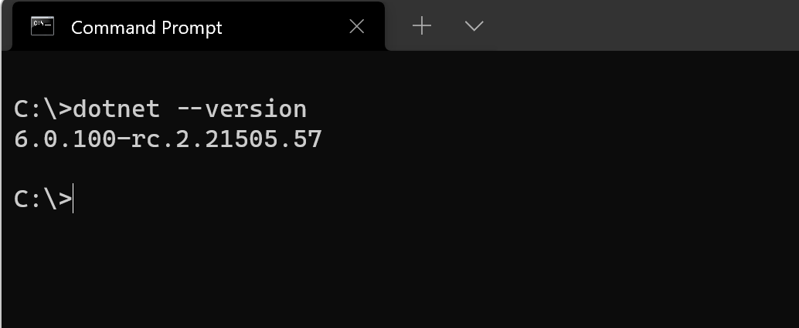
In my case, I’m running the .NET 6.0 RC2 Preview, which should shift to a Release version later today :)
- Next, create a subfolder for your Blazor Application, by initating the “MD” (Make Directory on a Windows Machine) command, and “CD” (Change Directory) to navigate to the subfolder
|
|
followed by
|
|
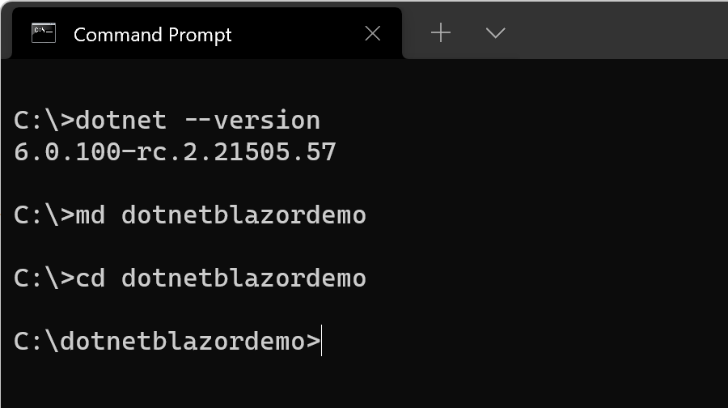
- Next, pull up the Blazor templates by initiating the following command:
|
|
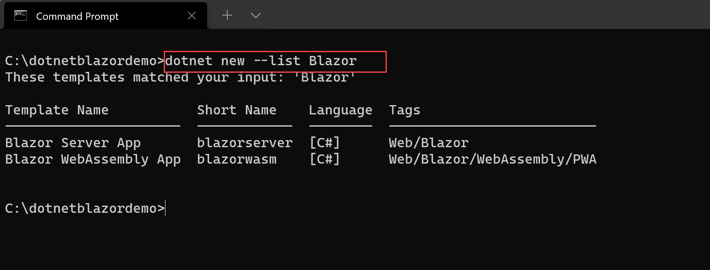
- As you can see, there is both a template for Blazor Server and Blazor Web Assembly; As I showed you how to deploy a Blazor Server App in the Visual Studio GUI post, let’s deploy a Blazor Web Assembly alternative this time. Remember, Web Assembly is a browser capability, allowing you to run full .NET code directly in the browser, without requiring a server-backend. For more details, check back on my Blazor introductory article in which I positioned the different Blazor versions and their characteristics.
Inititate the following command:
|
|
Which nicely creates all necessary components for our Blazor App, containing the Client (Front-End), Server (Back-End) and Shared components.
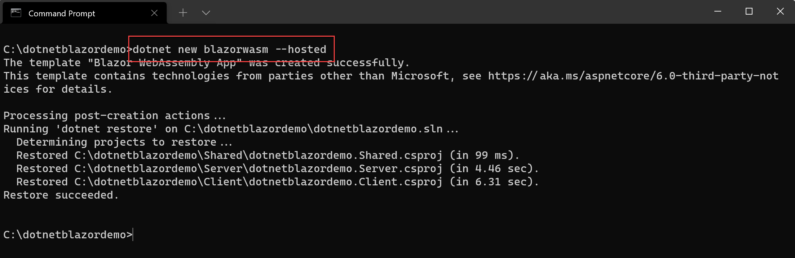
- To actually run the Blazor Web Assembly app, move into the “Server” folder (cd Server…) and kick off the “dotnet run” command:
|
|
This starts with compiling (Building…) the app, and showing a successful run, exposing the different ports the app is listening on (https and http)
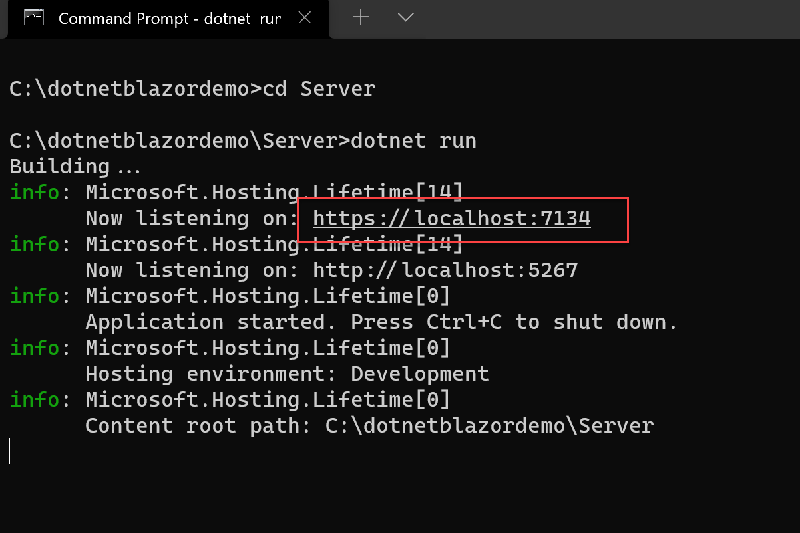
- Open your favorite browser, and connect to the https://localhost:
address; easiest (on Windows) is Ctrl+click and selecting the URL.
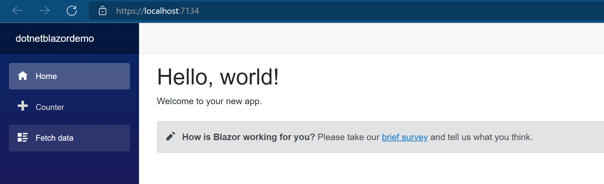
You now have a fully functional Blazor App running in the browser. Congratulations. (for details on what the app is about, feel free to check my notes in my previous article)
More dotnet Blazor command line options
While I could have stopped the article here and thanking you for following along, I wanted to emphasize some other capabilities from the dotnet commandline, and covering some of the additional parameters to choose from. Note: I will only touch on the Blazor-specific options, not all the overall dotnet commandline options available.
- To get an idea about all different options available, run the following command:
|
|
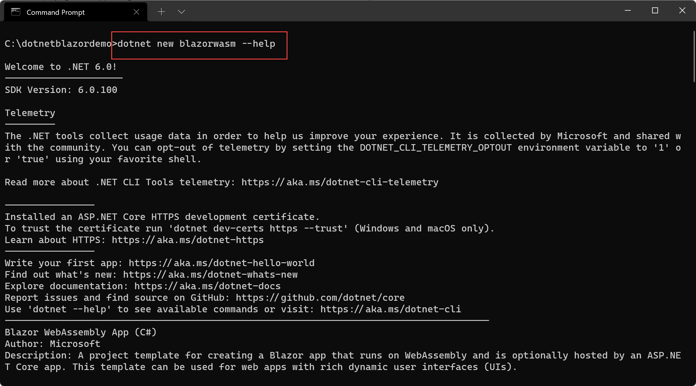
deploy a specific Framework version
With different .NET Framework versions available on the same developer station, it might be necessary to specify a specific version of .NET to use; this is possible by adding the -f or –framework parameter to the dotnet new blazorwasm syntax, followed by the version identifier net5.0, net6.0 or netcoreapp3.1
include ASP.NET Core host
We used this parameter in the previous steps, but I didn’t really explain what it did. If you want to build a “client” Web Assembly version, which runs with an ASP.NET Server-backend, you need to specify the -ho or –hosted parameter
Let’s run a similar command as before to create a Blazor Web Assembly app, without specifying the –hosted parameter, to see the difference:
|
|
Once created, check the file structure of this new application folder:
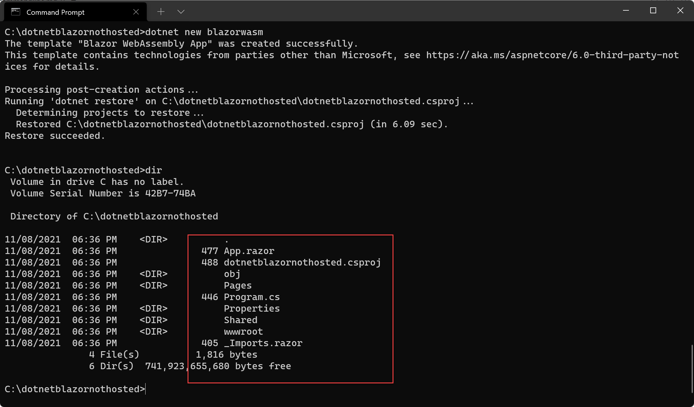
As you can see, there is no separation for the Client and Server code files, but we only have the Pages and Shared folder.
Integrate Azure AD authentication
It might be required to integrate authentication into your Blazor Web Assembly app, and why not considering Azure Active Directory for this, right? While there is a bit more required than what the commandline parameters give you, it’s a great starting point, deploying a new Blazor app which is pre-authentication ready. To do this, specify the -au or –auth parameter
|
|
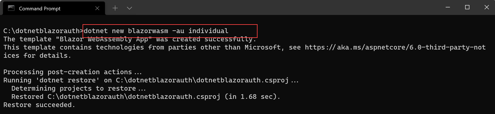
The creation process is about the same as before; so let’s trigger another dotnet run action and connect to the app from the browser:
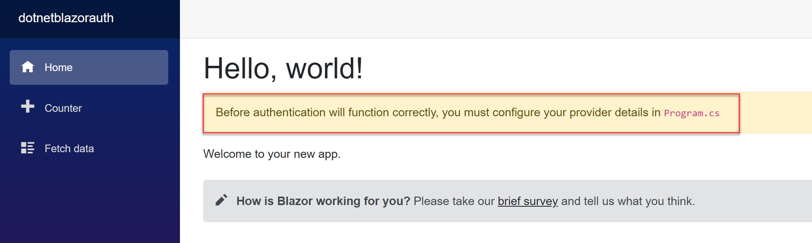
Nice! There is a prompt here, informing us to customize the Program.cs file, and provide the necessary Azure AD Authentication for our application identity
Let’s have a look at the Program.cs file, which also contains a little snippet and pointer where to add the necessary Azure AD Authentication settings and where to find additional info in the docs.
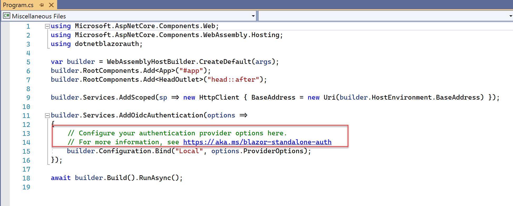
Running Blazor App as Progressive Web App
I won’t drill down on all the details on what a Progressive Web App is about, but in short, it allows you to turn your Web Assembly browser-based app into a “desktop”-mode application, or even using it “offline” (depending on app specifics). This is done by defining the -p or –pwa parameter.
Let’s try it out:
|
|
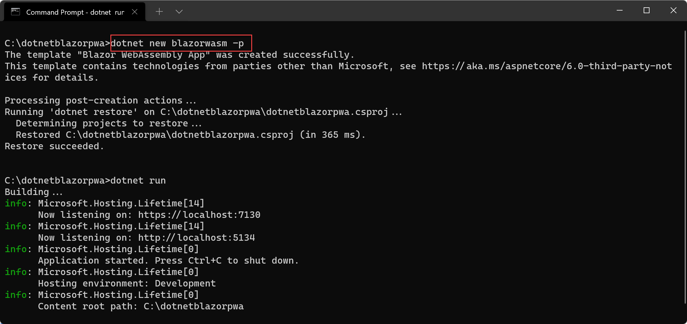
and testing it again from the browser by connecting to https://localhost:
From the browser properties, navigate to Apps and select Install this app
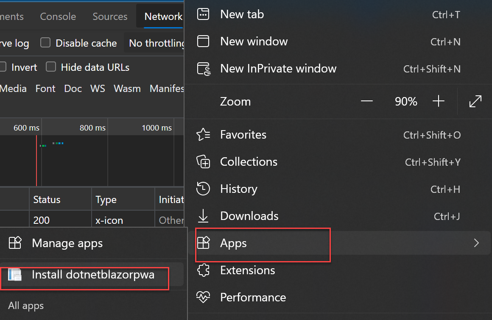
and confirming the popup prompt Install once more.
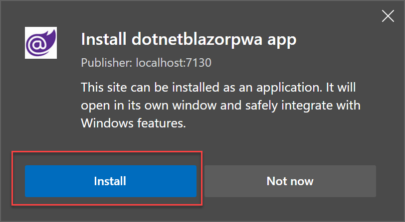
Once installed, you can set some additional settings by clicking the Allow button.
From here, your app will run in a separate docked window, just like any other Windows Application. You could also add a shortcut to the desktop, taskbar or start Menu.
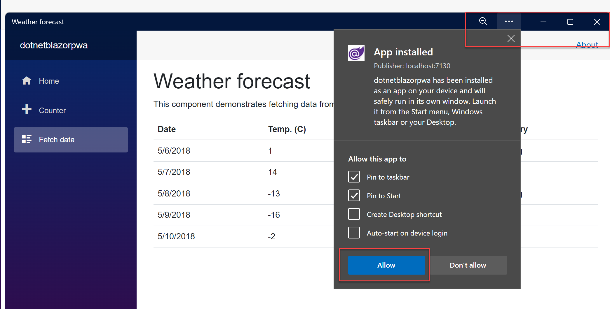
Summary
In this post, I introduced you to creating your First Blazor Web Assembly App, using the dotnet commandline syntax. Starting from the base Blazorwasm template creation, I also covered several interesting creation parameters that could come in handy when creating Blazor Web Assembly apps, directly from the commandline.
In a next Blazor-related post, I’ll walk you through some fundamental layout customization options, changing the look and feel of the navigation bar, the top bar and the actual web app pages themselves by introducing HTML and CSS primarily.
For now, take care of yourself and your family, see you again soon with more Blazor-news.

Cheers, Peter